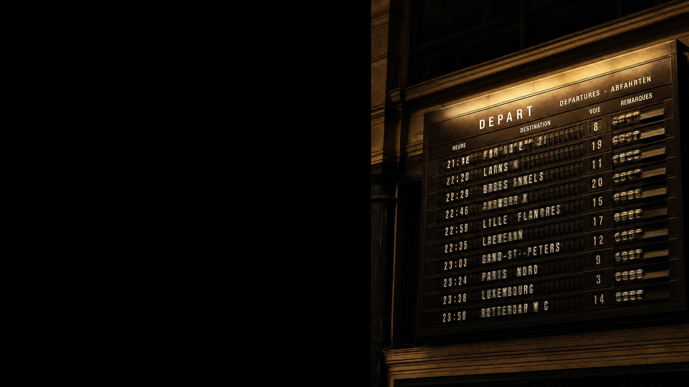

is this digital?
image: ai-generated (gpt-image-2)
digital is not the same as electronic
not one of them contains a chip, so digital cannot mean electronic.
images: ai-generated (gpt-image-2, gpt-image-2.5-flare)
digital means finitely many states,
and nothing in between counts.
the same disturbance, twice
a small disturbance changes the value, but not the state.
the part no program controls
light has no steps, but your program needs them
digitising turns the stepless light into a few states.
the same scatter, cut into more regions
the readings scatter as much as before, but with more regions some land in the wrong one.
what the thrown-away precision buys
every digital copy is reborn from clean states, so it never inherits the noise.
digitising throws information away,
and it does so on purpose.
which exact value inside a region it was is gone for good.
digitising takes two cuts
sampling cuts the picture into points, and quantization cuts each point's value into levels.
which cut was too coarse?
what a picture costs
what you keep, you pay for in minutes.
how far can you go?
where would you stop?
the same two cuts, for sound
sampling slices time, and quantization slices the amplitude.
where your alphabet is born
from lifi_hardware import sensor r, g, b, c = sensor.read()
if c > 250:
symbol = "bright" else: symbol = "dark"
this one line turns thousands of possible readings into just two symbols.
how many colours are safe?
two colours are safe,
and eight are fast.
somewhere in between sits your alphabet, and only your own measurements know where.
you decide where the lines go.
from there on, your decision is the truth, not the physics.